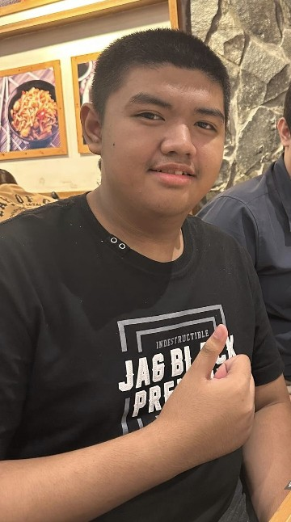
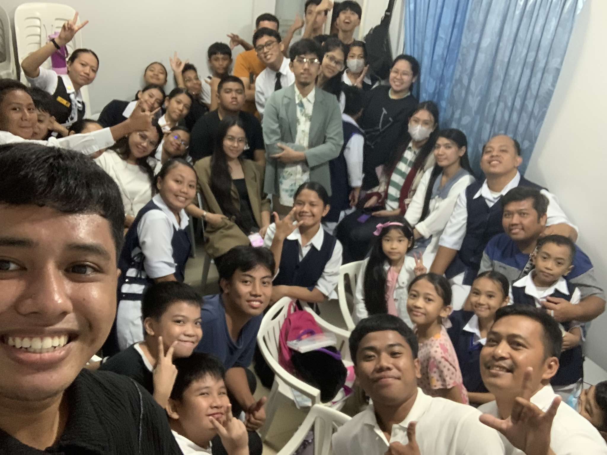
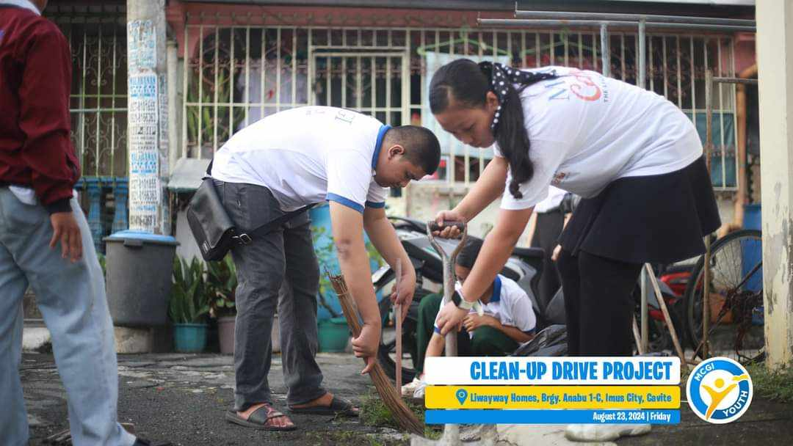
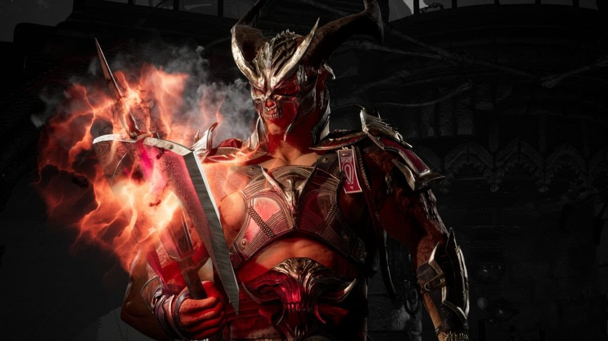
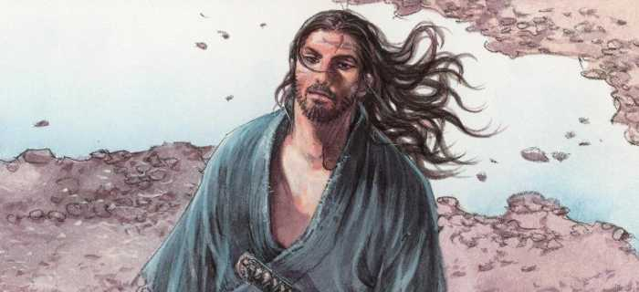
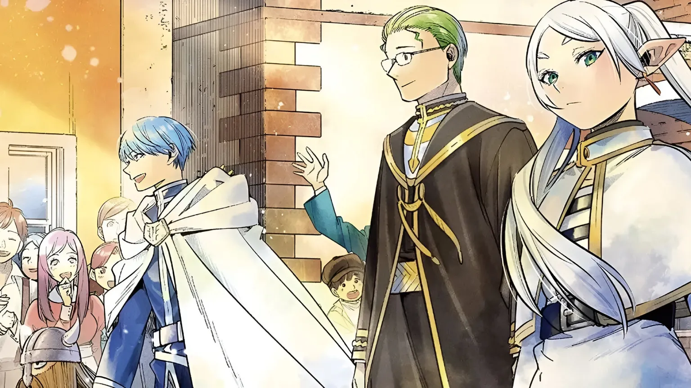
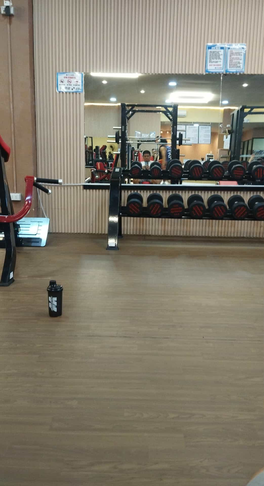

ABOUT MYSELF

Jyan Karl Marzan
My Name is Jyan Karl Marzan, I am now a Student from CVSU, i'm 18 Years old. I live in Imus City, Cavite, Specially in Anabu 2-B.FAVORITE AND HOBBIES
I want to talk about my hobbies first, so I spend most of my days at home, doing house chores like washing the dishes, hanging up all of my family's clothes, helping my mother on her duties. I have been quite supportive since i was a kid, and i still am supportive, I go to church every wednesday and saturday, and i have participate in activities in my church like a clean up drive


Of course, I have some free time for myself, playing some video games, my favorites are Marvel Rivals and Mortal Kombat 1. What i liked about marvel rivals is that it allows me play my favorite superheroes from marvel and voice acting in the game is very entertaining and has references back to the original comics. it sounds so memorable especially when they are using their ultimates. they say something before or during their ultimates, like how the winter soldier aka bucky yell out "ARMED AND DANGEROUS" Its very memorable and it gives the enemy players a early warning that the winter soldier is using their ult.
And for Mortal Kombat 1, I like the gore of the game, pulling of a fatality is very satisfying, Because the animation and the graphics during the fatalities increase the effective gore of each fatality. Both of these games have a similarity, which is that it's a multiplayer game, I can play with my friends either completing the objective or fighting each other


Watching films like most of the Marvel films or some comedy and thriller movies like Free guy (2021) and Final Destination franchise. Free guy and Final Destination has completely different tone. Free Guy is a fun, lighthearted action movie about a npc gaining sentience inside the video game, while Final Destination is a dark horror film about people trying to escape death’s plan.
The other hand, i read some manga, My favorites are Vagabond and Frieren Beyond Journey's end.
Lets start with vagabond, There's many reasons why i love Vagabond, the artsytle can resemble real life, it has a gritty and expressive artstyle. I like Musashi's story of a wild beast slowly turning to a wise man, but it was cutted before it ended. Unlike Frieren which is still ongoing but its very slow. However the story is great and the world building is depth and life-like. some might not like the manga for its long text bubbles, but nevertheless i still find frieren enjoyable to read.


most of my hobbies are at home and can be quite unhealthy, and only recently i have been exercising in the gym. Its going well, I was 103KG in April 2025 but now, I recently Checked my weight and it is now 93KG. i've been getting better controlling my eating habits, and taking more walks lately.
